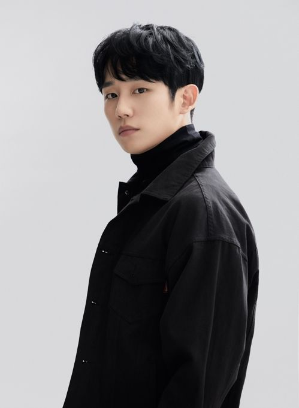

배우 정해인의 2014년 백년의 신부로 데뷔한 남자 배우입니다. 현재까지 총 12개의 드라마, 8개의 영화 그리고 4개의 예능에 출연하였습니다. [2020년 05월 02일 기준]
대중들에게 알려지기 시작한 것은 드라마 도깨비에서 여주인공 지은탁의 첫사랑인 최태희 역으로 특별출연한 이후였는데, 방송 이후 이 드라마는 카메오까지 잘생겼냐며 좋은 반응을 얻었다. 같은 시기에 방영한 불야성에서는 꽤 비중있는 배역으로 출연했음에도 드라마가 많이 알려지지 못해서 정해인이 출연했다는 사실조차 모르는 사람들이 많은데, 오히려 잠깐 특별출연한 도깨비를 통해 인터넷과 SNS 등에서 제법 화제가 되어 한동안 '태희 오빠'라는 수식어가 따라 다녔다.
2017년에는 드라마 당신이 잠든 사이에와 슬기로운 감빵생활에 출연하였고, 2018년 3월 30일부터 5월 19일까지 JTBC 드라마 밥 잘 사주는 예쁜 누나에서 손예진과 같이 주연으로 출연하면서 인지도가 급상승했다. 2018년 하반기 김고은과 영화 유열의 음악앨범 크랭크인에 들어갔으며 2019년 8월 28일 개봉했다. 2019년 상반기에는 MBC 드라마 봄밤에서 한지민과 같이 주연으로 출연하였다.
2020년 3월 tvN 드라마 반의반에서 인공지능 분야에서 독보적으로 앞서나가는 있는 기획자, 하원 역으로 출연했다. 그러나 드라마 시청률이 지속적으로 추락해 1%대 성적으로 고전을 면치 못하다 보니, 결국 16부작인 드라마를 12부작으로 압축 편성을 해 승부수를 띄워 시청률 반등을 꾀한다고 한다. 본의 아니게 조기종영을 하게 된 셈이다. 밥 잘 사주는 예쁜 누나, 영화 유열의 음악앨범, 드라마 봄밤에 이어 또 한 번의 멜로 드라마의 출연이 시청자들에게 피로감을 주는게 아니냐는 분석도 있다. 물론 영화 시동에서 반항아 연기로 이미지 변신을 꾀했지만 큰 반향을 일으키지 못했다. 데뷔 초창기 남자 배우가 갖기 힘든 해맑고 순수한 부드러운 이미지가 지금껏 정해인의 인지도를 높여주는데 1등 공신이었지만 이후 출연작들이 데뷔 이미지에서 크게 벗어나지 않는 비슷한 연기들로 주를 이루고 있기 때문에 신선함을 주지 못한다는 평가이다.
그러나 배우보다는 각본의 문제가 더 크다고 볼 수 있다. 공감하기 어려운 소재와 플롯에 기이한 짝사랑 이야기다. 첫사랑을 잊지 못한 남자 주인공과 그런 그를 짝사랑하는 여자 주인공의 로맨스는 더 이상 새로운 소재가 아니다. ‘인공지능’이라는 새로운 소재를 얹어 변주를 시도했으나 오히려 극의 몰입을 방해하고 있기 때문이다. 그렇기에 배우와 소속사는 각본을 보는 안목이 중요하다. 어떤 명배우라도 각본과 연출이 허술하면 흥행과 비평에서 자유로울 수 없음은 익히 보아온 사실이다. 다만 비슷한 이미지의 소비를 위한 작품 외에는 캐스팅 제안이 들어오지 않는다면 배우로서의 고민이 있을 것으로 보인다.